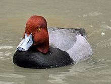
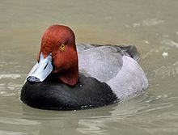

| Redhead | |
|---|---|
|  | |
| male | |
 |
|
| female with young | |
| Conservation status | |
| Binomial name | |
| Aythya americana (Eyton, 1838) |
| Redhead | |
|---|---|
|  | |
| male | |
|
|
| female with young | |
| Conservation status | |
| Binomial name | |
| Aythya americana (Eyton, 1838) |
The Redhead (Aythya americana) is a medium-sized diving duck, 37 cm long with an 84 cm wingspan.
The adult male has a blue bill, a red head and neck, a black breast, yellow eyes and a grey back. The adult female has a brown head and body and a darker bluish bill with a black tip.
The breeding habitat is marshes and prairie potholes in western North America. Loss of nesting habitat has led to sharply declining populations. Females regularly lay eggs in the nests of other Redheads or other ducks, especially Canvasbacks. Redheads usually take new mates each year, starting to pair in late winter.
Following the breeding season, males go through a molt which leaves them flightless for almost a month. Before this happens, they leave their mates and move to large bodies of water, usually flying further north.
They overwinter in the southern and north-eastern United States, the Great Lakes region, northern Mexico and the Caribbean.
This strong migrant is a very rare vagrant to western Europe.

{kind=link}